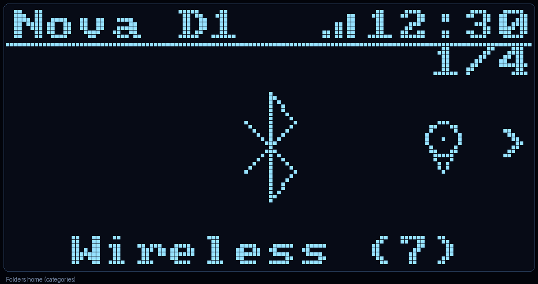
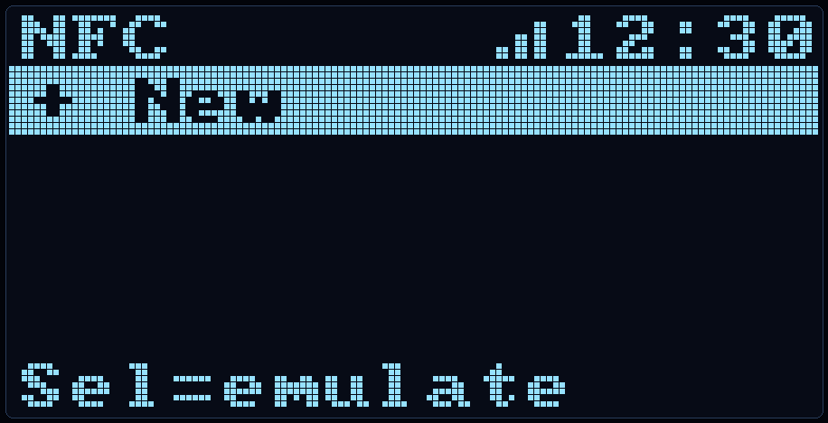
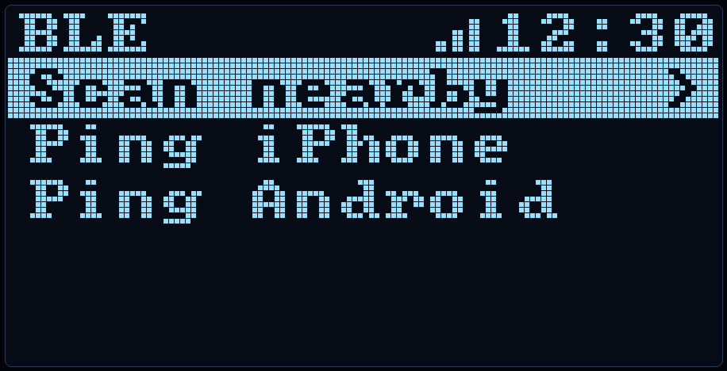
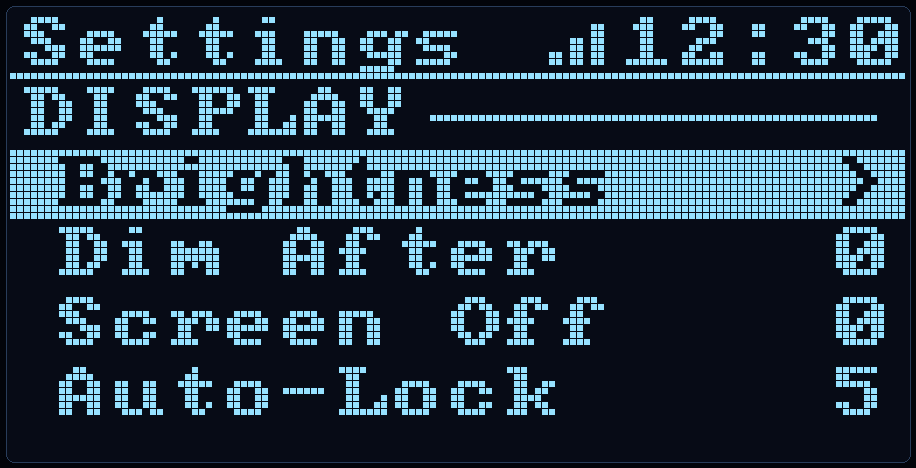
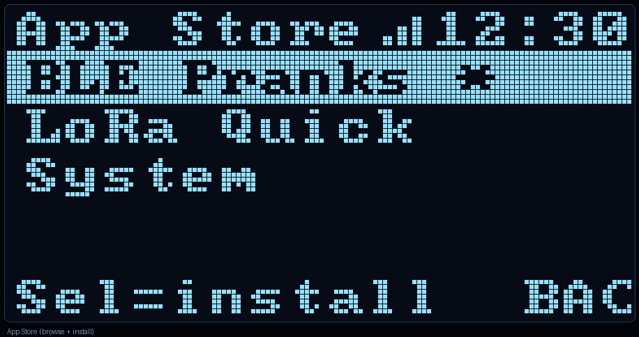

A multi-tool you build yourself.
A Raspberry Pi Pico 2 W pocket multi-tool that runs RPCortex: a 128×64 OLED UI driven by a rotary + buttons, LoRa messaging, NFC, GPS, sub-GHz, infrared, WiFi/BLE, and a web control panel for your phone, all from off-the-shelf modules. This page tracks the build as it goes.

Rotary encoder and buttons, as on the device
The interface
The 128×64 OLED, driven by a rotary encoder and its buttons. These are real renders of the actual UI, and you can drive it yourself in the browser.









Build progress
What is left, on the operating system first and then on the Nova D1 itself. The percentage counts each item as done, half done or not started; “board test next” means it works and is tested on a computer, and is waiting to be tried on hardware.
RPCortex v2
72%The operating system the Nova D1 runs on, in C++ for the Pico family.
11 of 18 done · RPCortex roadmap
Still to do
Done (11)
&&, redirection, scripts, aliases, ~, Tab and history donesudo with the admin’s own password for system changes donerpc command) and a browser tool, and a board with no network of its own can use the computer’s doneNova D1 on RPCortex v2
56%The novad1 package: the GUI, its apps and its radios.
9 of 18 done · Nova D1 on RPCortex v2
Still to do
Done (9)
pkg install novad1 and runs from a flash slot, about 80 KB resident done.sub, .ir and .nfc files, read and written byte for byte doneThe earlier build: Nova D1 on RPCortex v1 (MicroPython)
The MicroPython build for RPCortex v1, confirmed module by module on hardware. The C++ build above is a port of the same screens.
Core platform verified
Wireless radios
Phone control web panel
RF & signals
Scripting & apps
Sensors & storage
USB & HID planned
USB HID (keyboard, BadUSB) is built into RPCortex v2 for the Pico's USB port and is host-tested; 125 kHz needs an LF module.
Built on RPCortex · installable as the novad1 package · from about $20 in off-the-shelf modules.
Docs, specs & tools
Everything Nova D1 in one place: the build guide, the Flipper compatibility map, the roadmap, and the design specs.
▶ Browser simulator
The C++ build, running in your browser. No hardware needed.
Nova D1 on RPCortex v2
The C++ build: how it installs, how it runs, and what has run on a board.
V1 reference (MicroPython)
Modules, pinout, parts and what's left for the MicroPython build.
What it can see
What the WiFi and Bluetooth radios can observe, and what they can't.
Parts & prices
Everything it does, every part to buy, what it costs.
Setup guide
Install, pick your board, wire it, turn it on.
Wiring guide
Pin map for every module, per board.
Flipper compatibility
What matches a Flipper Zero, and how.
Nova D2
The next device: pcap, dual-band, LF emulate.
Runs on RPCortex · packages: RPCortex-repo